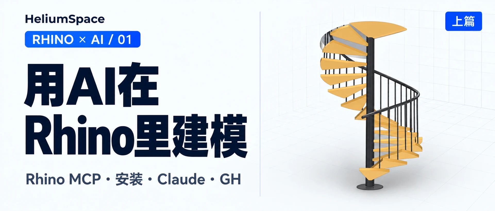

Blogs
每期视频的图文版：AI、编程与设计工具的真实使用记录。Written versions of my videos: hands-on notes on AI, coding and design tools.

Agent 开发实录Building with AI agents
一行代码不写，用 Agent 开发 Grasshopper 插件Building a Grasshopper Plug-in with an AI Agent, Without Writing a Line of Code
从拓扑优化到 Rhino 摸鱼游戏，分享我一行代码没写，用 Agent 开发、测试并发布定制化 GH 插件的过程。From topology optimization to games inside Rhino: how I used an AI agent to build, test and publish a custom Grasshopper plug-in without writing code.

用AI在Rhino里建模 · 第 1 篇Modeling in Rhino with AI · Part 1
用AI在Rhino里建模（上）Modeling in Rhino with AI (Part 1)
安装 Rhino MCP，让 AI 建水壶、牛牛和旋转楼梯，再试试 Grasshopper。Installing Rhino MCP and letting AI model a kettle, the cow and a spiral staircase, then trying Grasshopper.

用AI在Rhino里建模 · 第 2 篇Modeling in Rhino with AI · Part 2
用AI在Rhino里建模（下）Modeling in Rhino with AI (Part 2)
换 GPT、GLM、DeepSeek 和本地模型再试一遍，效果和问题都在这篇。Trying it again with GPT, GLM, DeepSeek and a local model: the results and the problems are all here.